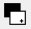
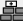

Advanced Marker Tracking
Keywords:
vision,
tracking,
marker,
augmented reality
Author(s): Timo Engelke
Date: 2008-12-16
Summary: This tutorial shows you how to use instantReality's vision module for marker tracking of multiple markers in on object.
Introduction
This tutorial will show how to define multiple markers for one object as well as the usage and configuration of the marker tracker module. For this we will create a marker cube that can be used in arbitrary situations, especially when having a movable object that should be tracked. A marker cube is basically a cube, where each side of it consists out of an individual marker. All the markers have to be defined to be part of one object to be tracked (TrackedObject) inside our world. Analogous the structure inside the VisionLib-data set is organized.
This example consists of three parts:
- Creating a marker cube
- Definition of a marker tracker inside a file
- Setting up and testing of a marker tracker using multiple markers for one object in instantVision
You will need the following parts:
- Printer connected to your PC
- Scissor and some glue
- A camera, supported by instantVision (i.e. a webcam, uEye, pointGrey ...)
- 20-30min. of time
Building up a marker cube
First we will have to build up our cube. There for we need a cube sheme, which can be downloaded at the bottom of the page (MarkerCubes.pdf). You can choose between two different sizes. You will have to print this out at least one of the scheme and use a scissor in order to cut out the cube around the lines. Once cut out, you'll have to bend the small markers at the dashed lines and use some glue in order to have a cubic dice. The resulting cubes may be look like this:
Defining the marker cube for instantVision
Now as you have built up a cube, we will have to define the cubes' markers in respect to each other and the center point. The VisionLib (the backend of instantVision) allows multiple markers to be defined for one tracked object. So defining the markers on the cube will allow us to track the cube in any state of rotation. This can be useful for tracking a movable object like a tool for instance.
We assume that you have already tried out the simple marker tutorial and maybe the marker tutorial for two objects. Within this tutorial we will not focus so much on the X3D integration as this already has beed described inside the other marker tracker tutorials. We will rather more show you some hints on using instantVision for testing your marker definitions and enhancing tracking quality.
Based on the previous tutorial the code for the instantVision (.pm) file inside the World section has to look like this:Code: Part of marker definition inside the pm file
<World ....
....
<TrackedObject key="TrackedObject1">
<ExtrinsicData calibrated="0">
<R rotation="1 0 0 
"/>
<t translation="0 0 0 
"/>
<Cov covariance="0 0 0 0 0 0 
0 0 0 0 0 0 
0 0 0 0 0 0 
0 0 0 0 0 0 
0 0 0 0 0 0 
0 0 0 0 0 0 
"/>
</ExtrinsicData>
<Marker BitSamples="2" MarkerSamples="6" NBPoints="4" key="Marker" is="1">
<Code Line1="0000" Line2="0010" Line3="0000" Line4="0001"/>
<Points3D nb="4">
<HomgPoint3Covd Cov3x3="0 0 0 
0 0 0 
0 0 0 
" w="1" x="-0.75" y="0.75" z="-0.75"/>
<HomgPoint3Covd Cov3x3="0 0 0 
0 0 0 
0 0 0 
" w="1" x="-0.75" y="0.75" z="0.75"/>
<HomgPoint3Covd Cov3x3="0 0 0 
0 0 0 
0 0 0 
" w="1" x="-0.75" y="-0.75" z="0.75"/>
<HomgPoint3Covd Cov3x3="0 0 0 
0 0 0 
0 0 0 
" w="1" x="-0.75" y="-0.75" z="-0.75"/>
</Points3D>
</Marker>
<Marker BitSamples="2" MarkerSamples="6" NBPoints="4" key="Marker2" is="2">
<Code Line1="0000" Line2="1001" Line3="0001" Line4="0000"/>
<Points3D nb="4">
<HomgPoint3Covd Cov3x3="0 0 0 
0 0 0 
0 0 0 
" w="1" x="-0.75" y="0.75" z="0.75"/>
<HomgPoint3Covd Cov3x3="0 0 0 
0 0 0 
0 0 0 
" w="1" x="0.75" y="0.75" z="0.75"/>
<HomgPoint3Covd Cov3x3="0 0 0 
0 0 0 
0 0 0 
" w="1" x="0.75" y="-0.75" z="0.75"/>
<HomgPoint3Covd Cov3x3="0 0 0 
0 0 0 
0 0 0 
" w="1" x="-0.75" y="-0.75" z="0.75"/>
</Points3D>
</Marker>
...
</TrackedObject>
Testing of the marker tracker inside instantVision
When starting instantVision the standard user interface will pop up. You can now load the file using the open file dialog. On the right hand side you will notice the ActionManager which consists of a tree view, presenting the steps that will be performed on every frame. The first thing to do is checking the VideoSource and display the acquired image. Open a window by pressing . Now pull over the VideoSourceImage element from the data set into the viewer using the mouse.
By pressing the play button () you will be able to see a running picture. If you experience a black screen, check the camera's physical connection and maybe press double on the VideoSourceAction inside the ActionManager. A modal dialog will pop up giving you options for selecting cameras. When you have selected an apropriate driver (which usually is ds (DirectShow) for web cams), you can press the init button () in order to reinitialize the camera driver.
InstantVision is capable of displaying additional information on top of the camera image. So give it a try and search for the "MarkerTrackerInternalCountour" container. Drag and drop it into the viewer. This can then look like this:
You can see the internal contours recognized by the ContourDetectAction inside the MarkerTracker. This is used by a internal corner detection, that supplies the MarkerDetector with 4 square points. There are two modes for contour detection. In case you have invariant light conditions you can use the configured one. If you are using a cheap web cam, that usually does not have a global shutter, due to motion blur you might experience a bad result when moving the camera. In this case you can also configure the MarkerTrackerAction to use a different contour tracker. Therefore double click on the MarkerTrackerAction inside the ActionManager. An action property dialog will pop up, where you can configure the action. You can change the ContourExtractor attribute to 1 in order to use a different extraction algorithm. You may change also the MTASilThresh attribute, which is a threshold for the binarization of the silouhette extractor that will be used for now. After pressing the init button () all the actions inside the action pipe will be reinitialized. You can play arround with the mentioned attributes and directly notice the change in the resulting contour.
In order to augment and test the pose calculation of the marker tracker action, we will now drag the TrackedObject1Camera data object into the viewer. This sets the intrinsic (camera properties) and extrinsic (pose) data. The viewer will thus be a 3D and a 2D-Viewer at the same time. We want a choordinate frame to be rendered from the perspective of the calculated camera. Thus we have to add a 3D model by using the add data button () and selecting the ChoordFrame.wrl file, which can be downloaded below. From now on the choordinate system will be rendered at the center of the cube.
The used TrackedObject1Camera can also be used as described in the other marker tracker tutorials in conjunction with instantReality inside X3D.
Files: